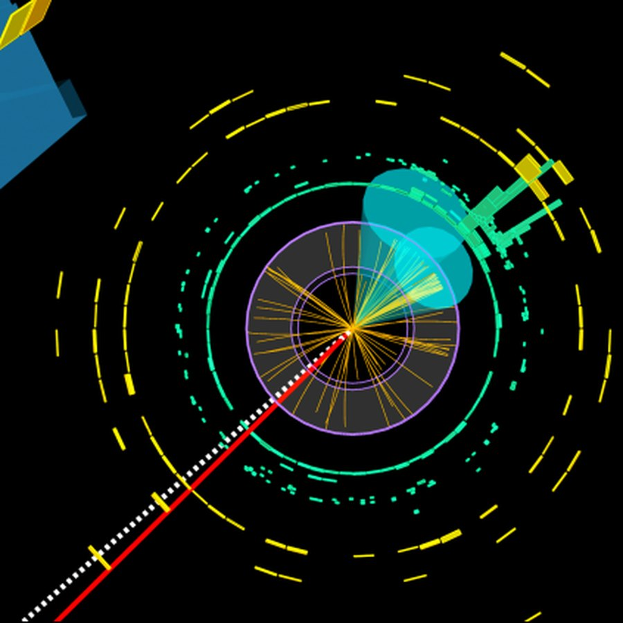
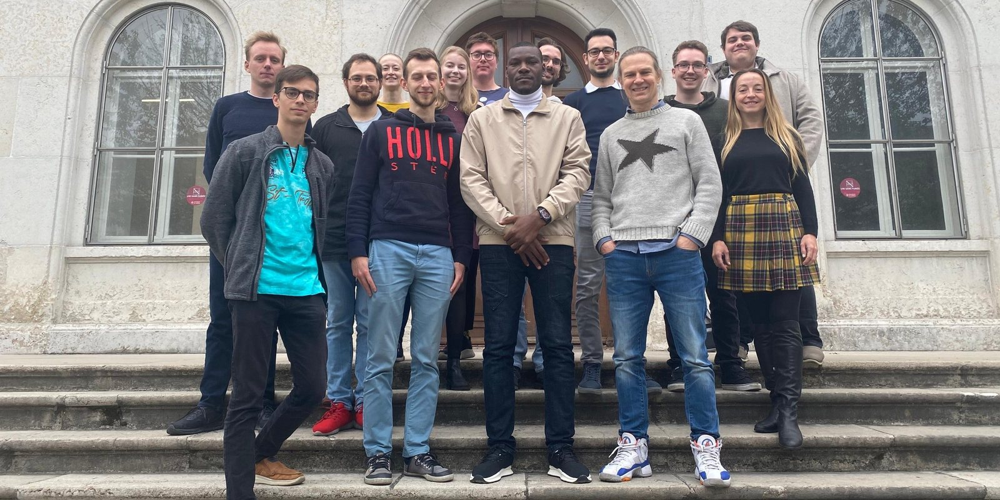

Beyond the Standard Model,
beyond supervised learning.
RODEM builds machine learning for the ATLAS experiment at CERN, to search data from the Large Hadron Collider for physics the Standard Model cannot explain.
New here
What we are looking for
An introduction to the Standard Model, what it leaves out, and how machine learning helps look for the rest. No physics background needed.
Students
Thesis projects
Master’s projects currently available, how PhD funding works in Geneva, and the background you will need.
Colleagues
What we build
Foundation models, optimisation, reconstruction, generation and exploration, with every paper grouped by the theme it belongs to.
Research
What we work on
Most of the work here is building the tools a search needs, and then running the search. The five themes below cover the methods, and each one links to the papers behind it.
The first four are methods. The last is what they are built for. More on the research →

People
Team
The group brings together physicists and machine learning researchers, with several students co-supervised across the Physics and Computer Science departments.

Get in touch
Contact
Address
Joining us
Master’s projects, PhD openings and fellowship routes are listed on the Join us page.